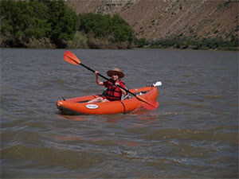

Plan your next Salmon River trip!
Salmon River Rafting
The Salmon River flows 425 miles, drains over 14,000 square miles and drops more than 7,000 vertical feet from its headwaters. Natural and untamed, the Salmon River is protected by Congress as one of America’s first Wild and Scenic Rivers. It has shaped its course through a rugged and diverse landscape providing unique river trips you will only experience in Idaho.
Idaho's Salmon River is divided into three separate sections, the Middle, the Main and the Lower. Each of these trips offers a very unique setting from one another. Just because they call it the "River of No Return" doesn't mean you shouldn't! Each section of river, offers something unique.
5 day Main River Trip
Rich in scenic wonders and history, the Main Salmon River drops 1,200 feet in 89 miles. The blue-green waters, known as the "River of No Return," warm up to very comfortable temperatures in July and August. Calm sections and deep pools perfect for relaxing, swimming, and simply absorbing the country's splendor. Our Main Salmon rafting trip will amaze you with white sand beaches and camping sites surrounded by towering Ponderosa Pines, flourishing wildflowers, and amazing wildlife viewing opportunities.
Begins and Ends: Salmon, Idaho & McCall, Idaho
Season: June-August
River Distance: 82 miles
Rapids: Class II-IV
Boat Type: Oar, Paddle, Kayak and Inflatable raft
Minimum Age: 6 (12 at high water)
STARTING AT $995
6 day Middle Fork Trip
Flowing untamed through a land so rugged that any attempts at settlement have failed, the Middle Fork of the Salmon River is truly a legend among the whitewater rivers of the world. This pure, clear, free-flowing river drops 3,000 feet over its 100 mile course through the remote and spectacular River of No Return Wilderness, the largest Wilderness in the lower 48 states.We can create the perfect opportunity to relax in a raft or challenge the whitewater while paddling an inflatable kayak or stand up paddle board.
Begins & Ends: Stanley, Idaho & Salmon, Idaho
Season: June-August
River Distance: 100 miles
Rapids: Class III-V
Boat Type: Oar Boat & Paddle Raft
Minimum Age: 7-12 (Based on water levels)
STARTING AT $1990
5 day Lower River Trip
Soak up rich scenic wonder and history while splashing toward huge sandy camping beaches. The Lower Salmon River trip explores the final miles of the Salmon River before it joins the mighty Snake River on its way to the Columbia. On this section of river, the trip covers 53 miles on the Salmon River plus another 21 miles on the Snake River. Experience a fun and exciting day with your friends and family with one of our knowledgeable guides.Enjoy sandy camping beaches backed up to pine forests and mountains.
Begins and Ends: Lewiston, Idaho
Season: July-September
River Distance: 89 miles
Rapids: Class II-III
Boat Type: Oar, Paddle, Inflatable Kayak
Minimum Age: 5 &10 (Based on water levels)
STARTING AT $1495
Riggins ID Weather: xx